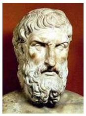
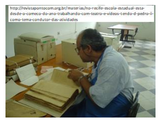
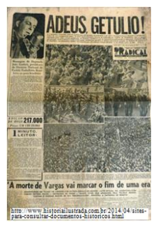
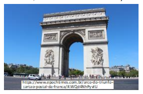

Capítulo 1: O estudo da história, sua importância e alguns dos principais conceitos
A história é uma ciência dedicada ao estudo das ações humanas no passado, que busca compreender como as sociedades organizavam-se, como construíram seus modelos políticos, de que forma realizaram sua economia ou ainda como elaboraram os seus elementos culturais e religiosos. Graças ao estudo da história tornou-se possível as sociedades conhecerem mais sobre o seu passado, identificando e promovendo aqueles elementos importantes relativos a identidade do grupo e a manutenção de suas tradições. Neste sentido é importante que ao lermos estes capítulos tentemos responder as seguintes questões: Como é feito o trabalho dos historiadores? O que são fontes históricas? Como é pensada a questão do tempo na história? Quais as relações entre o real e a verdade, e entre a história e a memória?
Contextualizando

Historiador grego Heródoto (485-425 a.C.)
fonte: http://www.sohistoria.com.br/biografias/herodoto/
Desde aqueles mais simples acontecimentos do nosso dia a dia, como o que, e como nos alimentamos, como nos relacionamos em casa, com os nossos familiares, ou na rua com pessoas que conhecemos ou não, o tipo de escolarização ou o de trabalho que desempenhamos, tudo isto está impregnado de significados que podem ser compreendidos através da história.
CONSTRUINDO CONHECIMENTOS

É importante levarmos em consideração que, assim como o passado foi feito pelos homens, a
história, ou, em outras palavras, a concepção
que temos a respeito do passado, também é
uma construção humana, logo, repleta de
significados e interesses diversos.
Portanto, o que temos na realidade a respeito do passado são “histórias”, no sentido que existem múltiplas formas de se interpretar o que passou. Tem-se, então que, passado e história são coisas diferentes e estão distantes entre si, no tempo e no espaço.
Em se tratando de história, existem diferentes tipos de interpretações a respeito dos mesmos processos ou acontecimentos, a importância atribuída a determinados fatos depende dos critérios adotados por cada historiador, não tendo uma grandeza absoluta. Soma-se a isto o fato de que a apreensão que os historiadores fazem do passado é sempre incompleta, acontecendo por intermédio de documentos, testemunhos e indícios que possibilitam uma visão parcial a respeito do ocorrido.

Documento histórico: Jornal fazendo referência à morte
de Getúlio Vargas.
Em relação ao trabalho do historiador, é importante que saibamos o que são e para que servem as fontes históricas. Em primeiro lugar, cabe ressaltar que a palavra “fonte” tem o sentido de “documento”, servindo ao historiador para abordar o passado e, de certa forma, construir a história. Essas fontes podem ser de procedência variada e serem transmitidas através de objetos distintos (como fotos, textos, construções, etc.), ou mesmo pela oralidade como é o caso dos testemunhos de pessoas que vivenciaram certos eventos ou processos.
Sendo assim, podemos dizer que as fontes ou documentos históricos constituem tudo o que ser humano produziu ao longo do tempo e que de alguma maneira chegou na atualidade para que pudesse ser analisado. As fontes históricas são variadas e muito amplas, podendo ter significados distintos conforme o uso que é feito por parte do historiador. Um exemplo de fonte histórica bastante comum diz respeito aos monumentos que podem ser vistos nas praças e ruas das cidades, eles são também, marcos da memória de determinados grupos, uma vez que são considerados significativos para a coesão e a manutenção de uma identidade comum aos seus membros.
Arco do Triunfo, monumento localizado na cidade de Paris, construído em comemoração às vitórias militares de Napoleão Bonaparte.

Ao contrário do que se propunha, o trabalho do
historiador não pode ser entendido como uma
mera descrição do passado. Ele reconstrói parte
do passado através da pesquisa que realiza,
levando a efeito possibilidades de entendimento
e interpretação crítica das fontes que dispõe.
Não existe, portanto, uma objetividade absoluta
no trabalho do historiador. Ele opta por diferentes sistemas de interpretação histórica, escolhe
e faz uso de certos documentos em detrimento de outros, prioriza certos fatos ou processos, e,
por mais que se esforce no sentido de uma imparcialidade, isso não seria suficiente para
abstrair por completo sua crítica a respeito do passado.
PARA SABER MAIS
HERÓDOTO
Como era a vida há milhares de anos? Que costumes as pessoas tinham? A arqueologia dá algumas respostas, mas não todas. Para entender a forma de pensar dos povos antigos, seria bom ter registros da história do mundo conhecido daquela época. Heródoto, que viveu há uns 2.400 anos, fez registros como esses. Ele foi um historiador grego do quinto século a.C. e escreveu uma obra chamada História.
Heródoto decidiu documentar as causas das guerras travadas pelos gregos e especialmente as causas das invasões persas de 490 e 480 AEC. Essas invasões ocorreram quando ele ainda era menino. Além de abordar esse tema, Heródoto incluiu muitas informações adicionais, registrando tudo o que descobria sobre cada nação afetada pelas conquistas persas.
Heródoto era um narrador habilidoso. Sua paixão pelo assunto fez com que ele registrasse tudo nos mínimos detalhes para completar a história. O que Heródoto realizou foi extraordinário, visto que ele não tinha à disposição informações oficiais do Estado que mantivessem um registro contínuo do que acontecia, pois documentos como esses eram raros.
Naquela época, poucos se importavam em registrar a história, a não ser quando faziam inscrições em monumentos para se gabar de suas realizações. Por isso, Heródoto teve de se basear em suas próprias observações, em tradições orais e em testemunhos de outros a respeito dos eventos que queria documentar. Para colher informações, Heródoto viajou muito. Ele cresceu numa colônia grega chamada Halicarnasso (atual Bodrum, no sul da Turquia) e visitou muitos lugares na Grécia.
Ele se aventurou para o norte, até o mar Negro e a Cítia, na região da atual Ucrânia. Em suas viagens para o sul, foi até a Palestina e o Alto Egito. Em direção ao leste, tudo indica que ele chegou até Babilônia. Ele provavelmente morreu numa colônia grega ao oeste, que ficava no que é hoje o sul da Itália. Aonde quer que fosse, observava e fazia perguntas, reunindo assim informações de pessoas que considerava ser as fontes mais confiáveis.
Até que ponto os registros de Heródoto são exatos? Com respeito aos lugares que visitou e às coisas que ele mesmo presenciou, seu registro é considerado exato. Suas descrições de costumes desconhecidos pelos gregos — como os rituais de mumificação egípcia e de sepultamento da realeza dos citas — são parecidas com o que os arqueólogos descobriram. Segundo um erudito, a grande quantidade de informações que Heródoto preservou sobre o Egito “supera em importância tudo o que foi escrito nos tempos antigos sobre esse país”.
Mas, muitas vezes, Heródoto não tinha escolha, a não ser confiar em testemunhos duvidosos. Além disso, as pessoas da época acreditavam totalmente na intervenção de deuses pagãos em assuntos humanos. Por isso, nem tudo o que ele escreveu satisfaz os padrões dos historiadores modernos. Mesmo assim, Heródoto tentou separar os fatos dos mitos. Ele foi sensato ao declarar que não acreditava em tudo que lhe diziam. Ele chegava a conclusões depois de examinar e comparar suas fontes.
Tudo indica que Heródoto dedicou sua vida à produção da obra História. Em vista dos recursos que tinha à disposição, essa foi uma impressionante realização.
(fonte :https://www.jw.org/pt/publicacoes/revistas/g201509/herodoto-pai-da-historia/)
De um modo geral, podemos dizer que na história o tempo é apreendido de diferentes maneiras, dependendo contexto e de quem esta a abordá-lo.
Temos, portanto, a possibilidade de pensarmos num tempo cronológico, sendo que diferentes sociedades do passado adotaram, e ainda hoje adotam medidas diferentes para a marcação do tempo. O calendário mais conhecido por nós é chamado de Calendário gregoriano, diferentes sociedades utilizaram ao longo da história, diferentes métodos de contar e controlar o tempo. Não podemos dizer que há melhores ou piores maneiras de desenvolver este processo, cada grupo social estabeleceu o calendário de acordo com suas necessidades e crenças.
Neste sentido, podemos dizer que o ritmo do trabalho do camponês medieval, por exemplo, está orientado pelos ciclos naturais, as épocas do ano de plantar ou colher. Como toda a sociedade agrária, a sociedade medieval guiava-se pelo ritmo mais visível da natureza, o sol, a lua, as estações.
“As mui ricas horas do duque de Berry”, Livro de Horas medieval (1340-1416). Ilustração feita para o mês de outubro onde, em primeiro plano os camponeses aparecem trabalhando na lavoura, enquanto, à distância, podem-se ver os membros da nobreza caminhando ou conversando ao longo do rio Sena, em frente ao palácio real.
(fonte: http://oridesmjr.blogspot.com/2012/0 4/as-mui-ricas-horas-do-duque-de- berry-c.html)
Por outro lado, e levando-se em consideração uma série de questões litúrgicas, as ordens religiosas adotavam um sistema de quantificação e controle sobre as horas mais rigoroso, contando-as de três em três a partir da meia noite. O sino no campanário das igrejas medievais também serviu ao controle do tempo, isto se pode dizer no que se refere tanto aos monastérios como na vida mundana das cidades e vilarejos.
Com o advento do relógio mecânico, outra possibilidade de mensuração do tempo foi introduzida no cotidiano das pessoas. Os diferentes momentos da vida passaram a ser regidos pela contagem das horas de uma forma mais precisa. Se tomarmos como exemplo o período conhecido como o da primeira Revolução Industrial, cada vez mais a jornada de trabalho de homens, mulheres e crianças, era aumentada, podendo chegar a 17 horas diárias de trabalhos exaustivos nas fábricas e em outros locais.
Você sabia?
O advento de novas tecnologias fez com que a noção das pessoas a respeito do tempo mudasse consideravelmente. Cruzar o oceano nas naus dos séculos XV e XVII era algo extremamente demorado e dispendioso se considerado em relação ao tempo necessário para fazermos a mesma viagem em um avião nos dias de hoje. O tempo necessário para obtermos informações de locais distantes até poucas décadas atrás estava condicionado ao sistema de correio ou as ligações telefônicas, difíceis e dispendiosas na maioria dos casos. Hoje, através de e-mails, dos satélites e dos cabos de fibra ótica conseguimos nos comunicar com praticamente todos os locais do nosso planeta em tempo real.
Dentre os cuidados que o historiador precisa ter no momento de exercer sua atividade, está o de não julgar o passado pelos valores do presente, e o de escrever a história a partir do que as fontes demonstram.
O historiador chega ao passado através de suas fontes. Estas, não lhes apresentam o passado por completo, ele precisa refletir discutir com seus colegas e chegar a conclusões possíveis a partir de muito estudo e reflexão.
Você já pensou sobre isso também?
Povos sem escrita acumularam na memória elementos significativos dos modos de fazer e proceder de suas sociedades, normalmente cabendo às etnias ou famílias a manutenção dos mitos, das técnicas e das tradições estabelecidas.
Griots, contadores de histórias em alguns povos da África
(fonte: http://www.iamhiphopmagazine.com/thegriottradition/)
Nestas sociedades a oralidade exerce um papel fundamental na transmissão dos saberes técnicos, como também na construção de uma identidade coletiva do grupo e na manutenção do prestígio de certas famílias. Com o aparecimento da escrita, novas formas de memória serão desenvolvidas. Ela passa a estar ligada aos monumentos celebrativos e aos documentos, que tem por finalidade armazenar informações diversas, assegurando que as mesmas estejam resguardadas para o conhecimento presente e futuro.
Poderíamos, neste ponto, começarmos a falar não em “memória”, mas em “memórias”, no sentido de que diferentes tipos de manutenção e organização da memória coletiva serão desenvolvidos pelos diversos grupos que tomam parte de uma sociedade. Cada qual elege seus interesses e necessidades a respeito do que deve ser preservado, rememorado, ou esquecido. Tratam-se dos momentos considerados significativos para a coesão e a manutenção de uma identidade comum aos seus membros.
A partir da leitura até aqui, organize em seu caderno um esquema sobre o papel da sociedade na construção da memória.
Comemorações do dia da consciência negra
O QUE APRENDI
Toda a história dá sentido ao nosso mundo. A necessidade de conhecer e reconhecer-se através do passado é um dos elementos mais marcantes da vida em sociedade. Desde os tempos mais remotos, coube aos historiadores prover os grupos humanos de identidade, coesão e sentido coletivo.
Neste sentido, sugerimos que você faça uma pesquisa sobre os seguintes pontos:
O que são fontes históricas e qual a sua importância para o trabalho dos historiadores?
Qual foi o papel desempenhado pelas pessoas e grupos do local em que você vive para fazer a manutenção da história local?
Que ligações podem ser feitas a respeito do que foi e do que é hoje nossa participação no desdobramento dos diferentes processos vividos por nossa sociedade?
Existem no local onde você mora pessoas que conhecem muito e gostam de falar sobre as origens do local? Quem são elas? O que elas têm a nos ensinar?